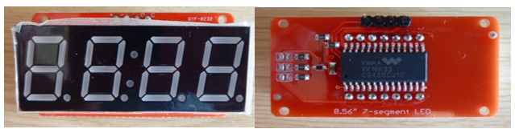
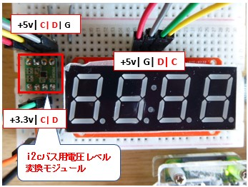
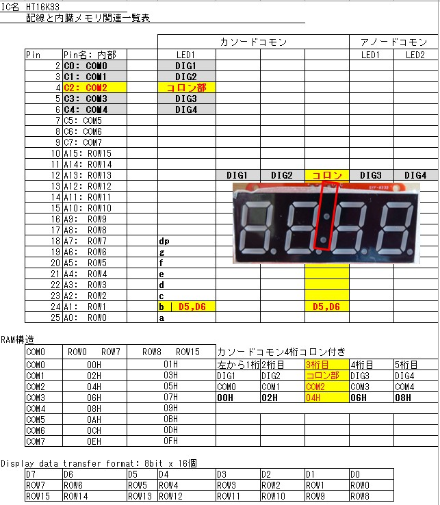
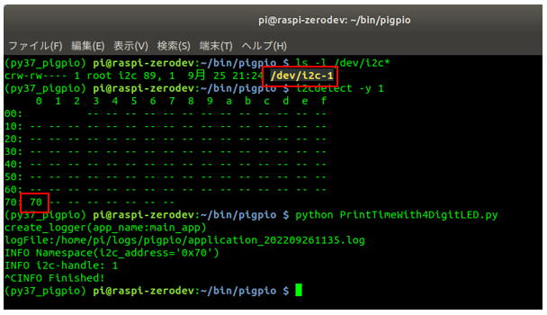

7セグ4桁(コロン付き)LED HT16K33モジュールに時刻を出力する
【最終更新日】2022-10-03
Amazonで購入した 中国製【0.56インチ LEDディスプレイモジュール 4桁 7セグメント HT16K33 I2C Arduino用】がこれ。 Arduino用となっていますがラズベリーパイでも部品を追加することで利用可能になります。

ラズベリーパイでは下記のようにi2cバス用電圧レベル変換モジュールをLEDモジュールの間に挟む必要があります。

参考にしたAdafruitのドキュメント(データシート)
70ページの回路図を参考にコロンをどのメモリに出力するかを整理した一覧表。

コンソールから デバイス(番号=1) と i2cアドレス(0x70) を確認

擬似的に時刻を表示するスクリプトを実行

擬似的に時刻を１分毎に表示し続けるスクリプトサンプルはこちら
※CTL+C でLEDが消灯してプログラムが終了します